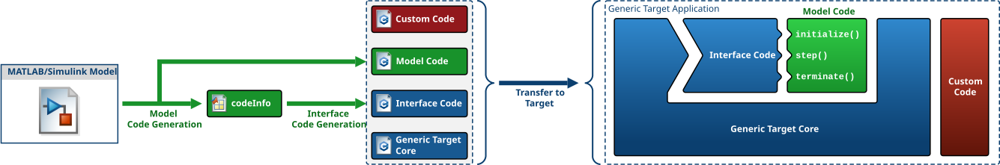

Overview
The Generic Target Toolbox executes MATLAB/Simulink models in real time on a target computer. Conventional Simulink real-time target libraries are typically bound to specific hardware, which constrains flexibility in application development: many supported platforms provide serial interfaces, digital I/O, AD/DA converters, or CAN buses, but they are limited in computing power. Many applications, however, require only network interfaces. For such applications, the Generic Target Toolbox provides hardware-agnostic real-time execution of MATLAB/Simulink models.
Any computer can serve as the target system as long as it runs a Linux operating system with the PREEMPT_RT kernel patch applied. The use of Linux also simplifies the integration of additional software libraries, since standard POSIX tooling is available.
Components
MATLAB Package
The MATLAB package (GT) provides the
GT.GenericTarget class, which generates the source code for
the Generic Target application from a Simulink model and deploys it to the target. It is also used to
start and stop the application and to download recorded data. The package additionally provides functions
to decode the recorded data back into MATLAB.
Simulink Library
The Simulink library contains the driver blocks used to develop a target application. Most of these blocks also work during simulation, although some have limitations (see the Simulink support overview).
Template Model
A Simulink template model is generated with the MATLAB package. The software for the Generic Target application is developed on the basis of this model, which is pre-configured with all settings required for the automated code generation and deployment process.
Generic Target Core
The toolbox ships with the build tools and the source code of the Generic Target Core, the core of the real-time application deployed to the target computer. The core source code is compiled on the target together with the code generated from the Simulink model.
How It Works
A Simulink model is created on the basis of the provided template model. In general, all standard blocks that generate generic C/C++ code can be used. For real-time specific functionality, the Generic Target Toolbox provides a dedicated Simulink library with driver blocks.
Deployment is performed with the MATLAB class GT.GenericTarget. During code generation, Simulink produces generic C/C++ code that consists primarily of a class with the following methods:
initialize()— executed once at startupstep()— executed periodically at the defined sampling rateterminate()— executed when the application stops
In addition, the codeInfo.mat file is generated, containing metadata such as sample rates and
function names. This information is used to generate a Simulink interface class that implements a standardized
programming interface and integrates the generated code with the Generic Target Core.

During deployment, both the generated model code and the Generic Target Core source code are transferred to
the target computer via SCP, and the deployment commands are sent via SSH. The target computer then compiles
all sources. At runtime, the Generic Target Core manages the execution of the initialize(),
step(), and terminate() functions. If the model contains multiple sample rates,
multiple step() methods are generated (for example, step0(), step1(),
step2()). These run concurrently in separate threads, prioritized by sample rate — the smaller the
sample time, the higher the thread priority.
Notes for Software Development
When developing a target application from a Simulink model, several points must be observed. Some may seem trivial, but others are not immediately obvious and can cause failures during code generation or compilation on the target. Keep the following guidelines in mind.